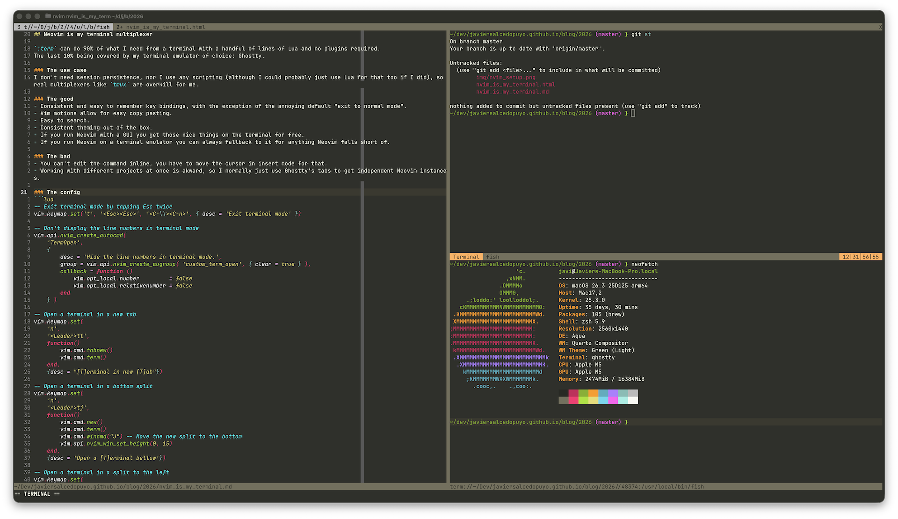

📅 27-Apr-2026
Neovim is my terminal multiplexer

:term can do 90% of what I need from a terminal with a
handful of lines of Lua and no plugins required. The last 10% being
covered by my terminal emulator of choice: Ghostty.
The use case
I don’t need session persistence, nor I use any scripting (although I
could probably just use Lua for that too if I did), so real multiplexers
like tmux are overkill for me.
The good
- Consistent and easy to remember key bindings, with the exception of the annoying default “exit to normal mode”.
- Vim motions allow for easy copy pasting.
- Easy to search.
- Consistent theming out of the box.
- If you run Neovim with a GUI you get those nice things on the terminal for free.
- If you run Neovim on a terminal emulator you can always fallback to it for anything Neovim falls short of.
The bad
- You can’t edit the command inline, you have to move the cursor in insert mode for that.
- Working with different projects at once is akward, so I normally just use Ghostty’s tabs to get independent Neovim instances.
The config
-- Exit terminal mode by tapping Esc twice
vim.keymap.set('t', '<Esc><Esc>', '<C-\\><C-n>', { desc = 'Exit terminal mode' })
-- Don't display the line numbers in terminal mode
vim.api.nvim_create_autocmd(
'TermOpen',
{
desc = 'Hide the line numbers in terminal mode.',
group = vim.api.nvim_create_augroup( 'custom_term_open', { clear = true } ),
callback = function ()
vim.opt_local.number = false
vim.opt_local.relativenumber = false
end
} )
-- Open a terminal in a new tab
vim.keymap.set(
'n',
'<Leader>tt',
function()
vim.cmd.tabnew()
vim.cmd.term()
end,
{desc = "[T]erminal in new [T]ab"})
-- Open a terminal in a bottom split
vim.keymap.set(
'n',
'<Leader>tj',
function()
vim.cmd.new()
vim.cmd.term()
vim.cmd.wincmd("J") -- Move the new split to the bottom
vim.api.nvim_win_set_height(0, 15)
end,
{desc = 'Open a [T]erminal bellow'})
-- Open a terminal in a split to the left
vim.keymap.set(
'n',
'<Leader>th',
function()
vim.cmd.new()
vim.cmd.term()
vim.cmd.wincmd("H") -- Move the new split to the left
end,
{desc = "Open [T]erminal to the left"})
-- Open a terminal in a split to the right
vim.keymap.set(
'n',
'<Leader>tl',
function()
vim.cmd.new()
vim.cmd.term()
vim.cmd.wincmd("L") -- Move the new split to the right
end,
{desc = "Open [T]erminal to the right"})
-- Open a terminal in a top split
vim.keymap.set(
'n',
'<Leader>tk',
function()
vim.cmd.new()
vim.cmd.term()
vim.cmd.wincmd("K") -- Move the new split to the top
vim.api.nvim_win_set_height(0, 15)
end,
{desc = 'Open a [T]erminal above'})
© Javier Salcedo. All rights reserved. | Design: HTML5 UP